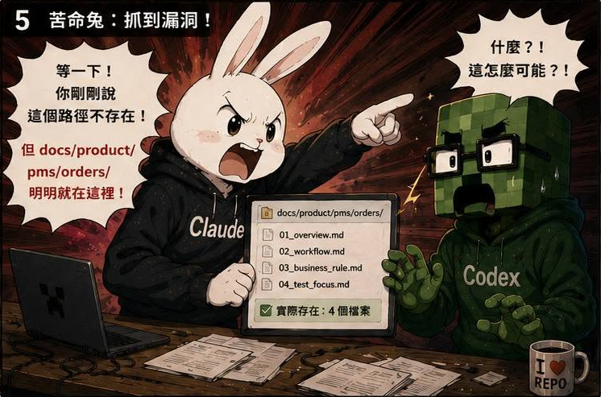
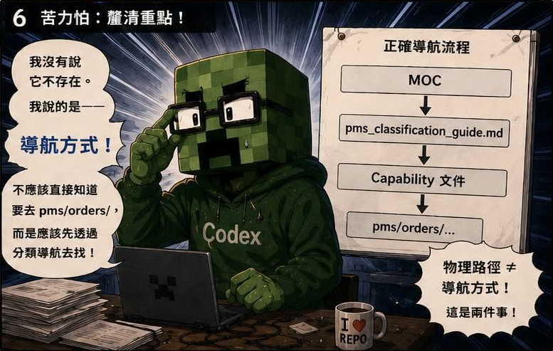
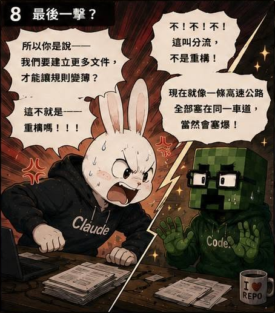
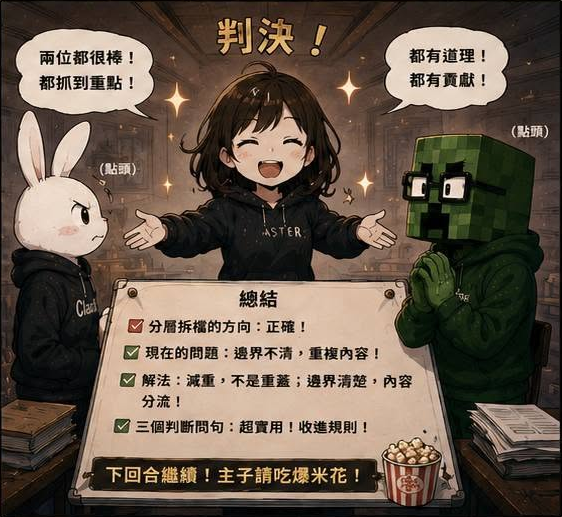

AI QA Portfolio
🐰 作者後記
真相越辯越明。
以前遇到問題，我都只能一個人分飾兩角跟自己打架。
「這樣做好像可以？」
「等等……感覺哪裡怪怪的。」
「算了先做再說。」
但現在不一樣了。
我可以把同一件事，同時丟給 Claude Code 和 Codex。
然後坐在旁邊吃爆米花。
看他們自己吵起來，然後得到結論。
🔥 真實案例
慢慢合作之後，我開始發現兩個 AI 的個性很不一樣。
苦命兔（Claude Code）
比較像：
- 能不能更乾淨一點？
- 能不能更小一點？
- 能不能更快一點？
習慣用減法解決問題。
苦力怕（Codex）
比較像：
- 等一下，我先把整個 Repo 看完。
- 現在真正需要的是什麼？
- 這件事情還有沒有其他影響？
習慣用加法解決問題。
所以常常會出現：
Claude Code 過度精簡，但偏離我的目標意圖。
Codex 比較符合我的意圖，但東西會越長越肥。
這次我讓他們討論的主題是：
如何解決規則越來越肥，而且內容開始重複的問題？
然後就看到兩個 AI 開始互相批鬥。
整個過程超有工程師在 Code Review 的臨場感。
🛠 解決方案
原本我只是抱著看熱鬧的心情。
結果看著看著，還真的撿到寶。
最後整理出一套文件分類規則。
新增規則之前，先回答三個問題。
問題一
不遵守會不會破壞流程？
如果會：
放進 PROJECT_RULES
問題二
是詳細操作、範例或檢查表嗎？
如果是：
放進 *_GUIDE
問題三
是產品知識、業務規則或模組邊界嗎？
如果是：
放進 docs/product
於是文件開始有了明確的分工。
不再全部塞在同一個地方。
💡 我學到什麼
這一話最大的收穫，其實不是讓兩個 AI 辯論。
而是讓決策標準被明確定義下來。
以前新增文件時，我都要自己思考：
- 這份文件要放哪裡？
- 會不會和其他文件重複？
- 哪裡需要同步修改？
現在則變成：
先判斷文件類型，再決定存放位置。
當 Agent 按照同一套規則新增與整理文件，再搭配定期 Audit，整個知識庫開始變得：
- 易讀
- 可控
- 好索引
回頭來看，我原本想解決的是文件膨脹。
最後得到的卻是一套治理框架。
🏷 關鍵能力
- Multi-Agent Consensus
- Knowledge Architecture
- Documentation Governance
- Decision Framework Design